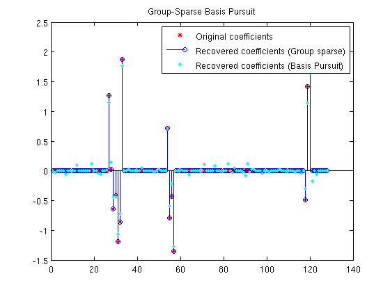

SPGL1: Extensions
Ewout van den Berg, August 2008
Contents
Introduction
Since the first release of SPGL1 (see A brief tour for the core features) we have made a number of extensions. These extensions are based on a slight generalization of the core which can now solve
minimize ||x||_primal subject to ||Ax - b||_2 <= sigma,
provided the following three routines are given for:
1. computation of the primal norm ||x||_primal, 2. computation of the dual norm ||x||_dual, 3. orthogonal projection onto the ball ||x||_primal <= tau.
Based on this we added SPG_MMV for BPDN with multiple measurement vectors, and SPG_GROUP for BPDN with groups imposed on the unknown vector.
Generate random data
Before applying the solvers we need to create a problem. We first create the measurement matrix A; later we create the sparse coefficients, which have a problem specific structure.
rand('twister',0); randn('state',5); % Initialize random number generator m = 50; n = 128; % Measurement matrix is m x n k = 14; % Set sparsity level x0 A = randn(m,n); % Random encoding matrix
Multiple measurement vectors (MMV)
The solvers SPG_BP and SPG_BPDN solvers can handle problems with complex unknowns:
minimize ||z||_1 subject to A*z = b.
When A is a real matrix we can rewrite this problem as
minimize ||X||_1,2 subject to A*X = B,
with X=[real(z),imag(z)], B=[real(b),imag(b)], and with the mixed (1,2)-norm defined as
||X||_1,2 := sum_i ||X(i,:)'||_2.
It turns out that this formulation is applicable not only to complex BP, but also to the multiple measurement vector problem. In these problems the there are multiple measurement given by B = AX + E, and, importantly, X is assumed to be row-sparse (many zero rows). This gives rise to the MMV BPDN problem:
minimize ||X||_1,2 subject to ||A*X - B||_2,2 <= sigma,
with
||X||_2,2 := sqrt(sum_i ||X(i,:)'||_2^2).
To see how this works, we generate a row-sparse coefficient matrix X0 and corresponding matrix B,
v = 3; % Number of observations p = randperm(n); p = p(1:k); % Location of non-zero rows in X X0 = zeros(n,v); X0(p,:) = randn(k,v); % The k-row-sparse solution B = A * X0; % The observation matrix
and call SPG_MMV to solve the MMV problem with sigma = 0:
opts = spgSetParms('verbosity',0); % Turn off the SPGL1 log output X = spg_mmv(A,B,0,opts); % Choose sigma = 0
To check that the solution X is indeed row-sparse and equal to X0, we plot X with each column represented by one line and the original coefficients marked by circles:
plot(X); hold on; % Plot solution plot(p,X0(p,:),'o'); hold off; % Plot non-zero X0 coefficients title('Multiple Measurement Vector Basis Pursuit');

Group sparsity
In the MMV formulation row-sparsity is encouraged by taking the two-norm over the entries in each row. In the more general setting sparsity may arise in groups that are known a priori but lack a regular pattern. Given a vector g containing the group number corresponding to each entry in x we can define the group two-norm
||X||_g,1 := sum_i ||x(g == i)||_2,
and use this to formulate the group-sparsity optimization problem:
minimize ||x||_g,1 subject to ||A*x - b||_2 <= sigma.
We create an example with 30 groups and choose three of them to contain non-zero random entries:
nGroups = 30;
groups = sort(ceil(rand(n,1) * nGroups)); % Sort for display purpose
p = randperm(nGroups); p = p(1:3);
idx = ismember(groups,p);
Next we generate the group-sparse vector and use the A generated for the MMV example to construct the observation vector b:
x0 = zeros(n,1); x0(idx) = randn(sum(idx),1); b = A*x0;
The group-sparsity problem is then solved using spg_group as well as using spg_bp
opts = spgSetParms('verbosity',0); % Turn off the SPGL1 log output x = spg_group(A,b,groups,0,opts); % Solve group-sparse BP xbp = spg_bp(A,b,opts); % Solve generic BP
Plotting the result shows how the BP solution differs from x0 and the spg_group solution:
plot(x0 ,'r*'); hold on stem(x ,'b '); plot(xbp,'c.'); hold off ylim([-1.5,2.5]); legend('Original coefficients',... 'Recovered coefficients (Group sparse)',... 'Recovered coefficients (Basis Pursuit)'); title('Group-Sparse Basis Pursuit');
Reference
[BergFriedlander] E. van den Berg and M. P. Friedlander, "Probing the Pareto frontier for basis pursuit solutions", January 2008 (revised May 2008). To appear in SIAM Journal on Scientific Computing.
% $Id: spgextensions.m 1078 2008-08-20 06:34:55Z ewout78 $